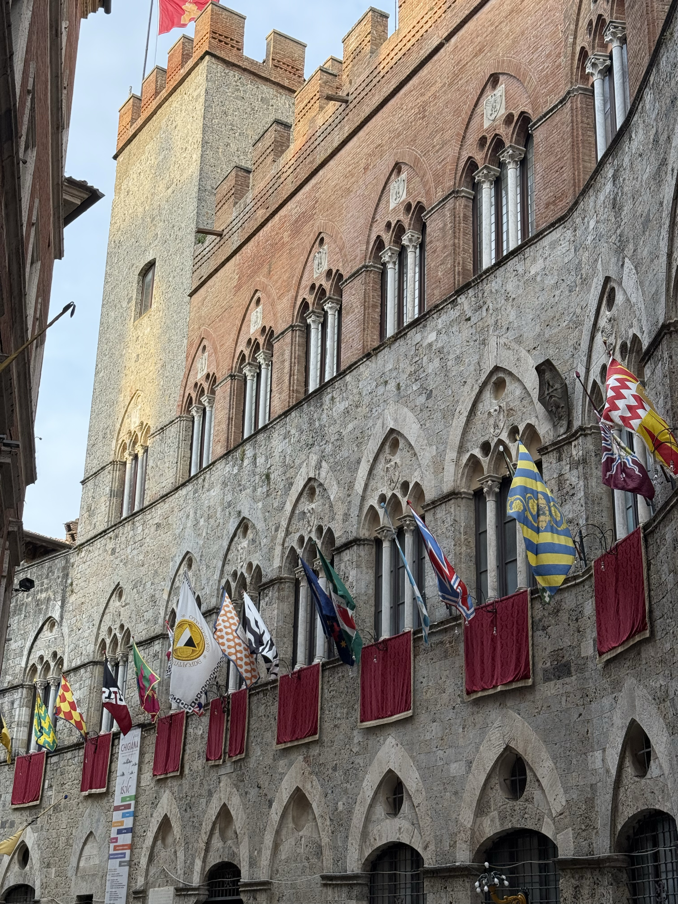
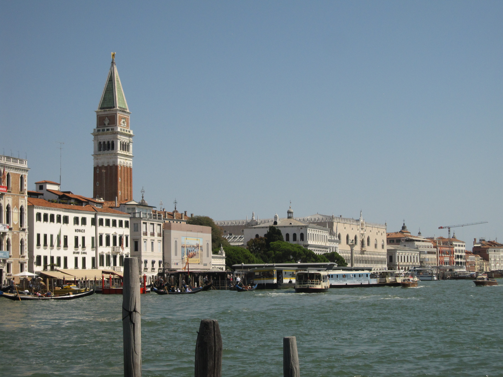
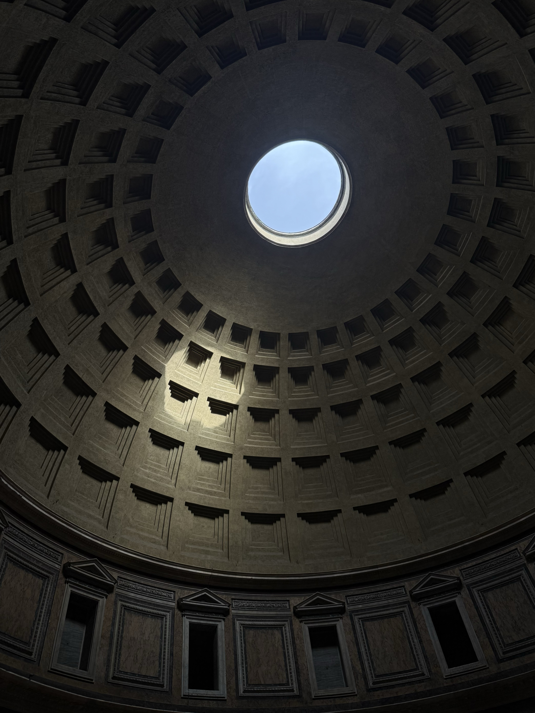
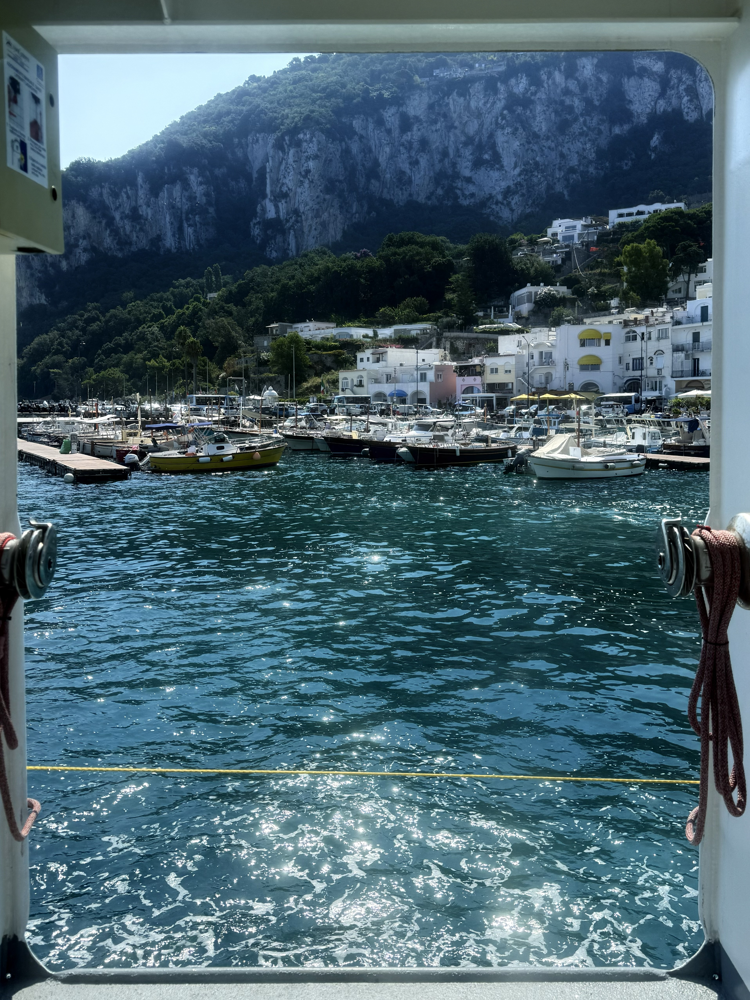
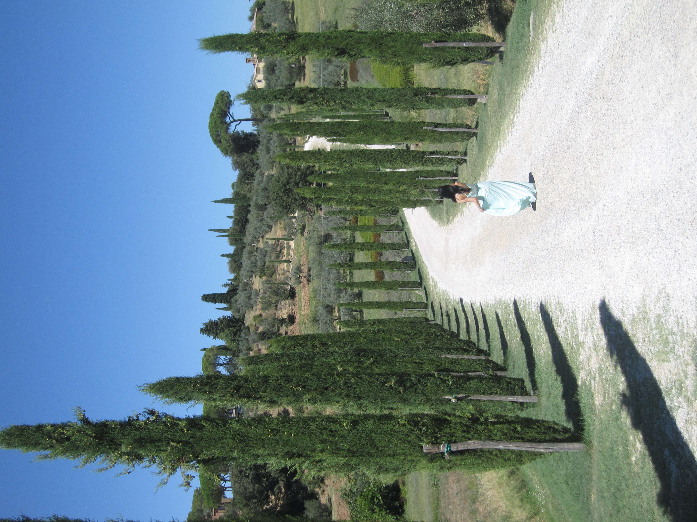
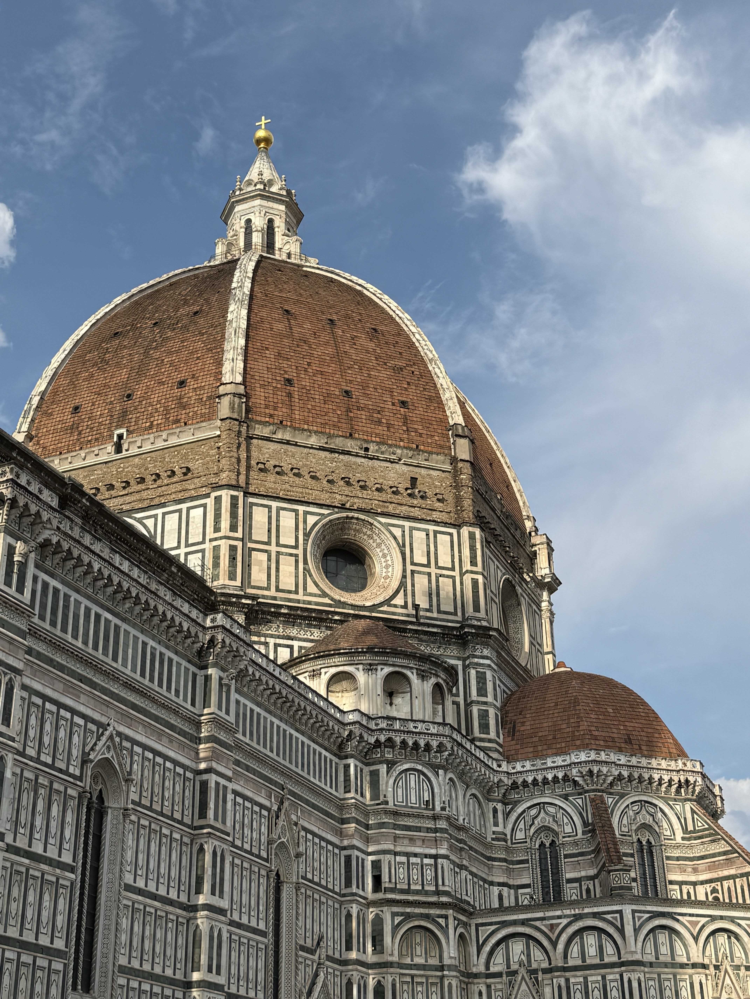

Siena
Siena was my home base during the summer program.
Details
Piazza del Campo is a good place to start exploring the old town.

Siena was my home base during the summer program.

Venice is full of small bridges and narrow streets.

Rome was one of the stops on my summer trip.

Naples was another stop on my summer trip.

Pienza reminds me of the small things I brought back from Italy.

Florence is known for its art and architecture.